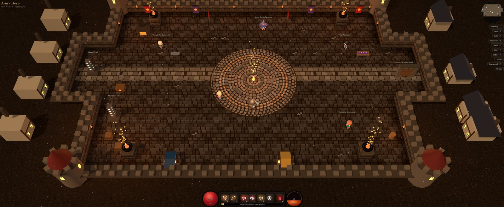

A Diablo-style action RPG for Windows. Four Acts of open country, a dungeon under the town that keeps going down, and loot all the way. Free, no account, co-op with friends.

Ashen Hold. The artisans, the stash, the Abyssal Trials stone and the gate out to the Acts.
Windows 10 or 11, 64-bit. About 250 MB. Any GPU with OpenGL 3.3 will run it. Older releases are on GitHub.
Run the installer and it puts a shortcut on the desktop and in the Start menu. Windows will probably show a "Windows protected your PC" box the first time, because the installer isn't code-signed yet; click More info, then Run anyway. Only download it from here or from the GitHub releases page.
Once it's installed you never need this page again: when I put out a new version the title screen shows an Update button, and the game downloads it, installs over itself and restarts. Your heroes live in %APPDATA%\Ashen Depths and are never touched by updates or uninstalling.
What it is
You pick a class, name a hero and walk out of Ashen Hold. The World Gate leads into four Acts, each a chunk of open country with its own camps, lairs and stairways down into the depths. Captain Rhea in town hands out the quests: find a landmark, burn out a cultist camp, kill two lieutenants, then the Act boss. Kill him and the next Act opens.
Under all of it is the dungeon. Every floor is generated fresh, every fifth floor has a boss, and it doesn't stop. The town has a blacksmith who salvages and forges, a jeweler for gems and sockets, an enchantress who rerolls item properties, and a stash. Level cap is 50, after which Ascension levels keep adding stats forever.
Beat the Pale King at the end of Act IV and the endgame opens: Cinder difficulty 1 to 10, the timed Abyssal Trials, uber bosses at the Altar of the Fallen, legendary gems and Ashforged weapons. The player guide covers all of it, and the item ledger lists every set, legendary and gem in the game.
Classes
Druid, Monk and Warlock are planned.
The four Acts
Co-op
Two to four players over Steam. One person clicks Host co-op on the title screen and picks a hero; the others click Find games or accept a Steam invite. Everyone keeps their own hero, bag, stash, gold and quests on their own PC. Loot you walk over is yours; experience is shared. The host decides where the party goes. Until the game has its own Steam page it uses Steam's free test app, so your friends list will say you're playing "Spacewar". That's normal.
Controls
WASD to move, left and right click for your two main skills, 1–4 for the rest, Q potion, T town portal, I inventory, C hero, K skills, P Ascension, J quests, M map, H codex, F11 fullscreen, Esc pause. Everything can be rebound in Options, and Xbox and PlayStation controllers work.
Patch notes
The game's title screen reads these from this page.
v1.0.10
Build 2026-10-14 · Map fix
The map shows where you are again. After a town portal and back, the minimap and the full map (M) kept showing Ashen Hold instead of the floor or Act you returned to. They now show the area you're in, with everything you'd already explored.
v1.0.9
Build 2026-10-14 · Item stats
New item stat layout. Every magic or better item has your class's main stat (Strength, Dexterity or Intelligence) and Vitality, then random primary stats for its slot, then secondary stats. Tooltips show the two groups separately.
How many stats: magic items get 1 extra primary; rares get 2 primaries and 1 secondary; legendaries and set items both get 2 primaries and 2 secondaries. Legendaries no longer carry more stats than set items, and both roll on the same budget.
Primary stats by slot. Boots can roll movement speed (most boots do). Weapons, helms, gloves, rings and amulets (and off-hands) can roll cooldown reduction. Resistance is Resistance to All Elements.
Secondary stats: single-element resistances (physical, fire, cold, lightning, poison, arcane), gold find, the new magic find, health globe and potion healing, experience, thorns and life per kill.
Magic find raises your chance of legendary and rare drops (+100% magic find doubles it).
Vitality rolls are smaller since every item has it now; overall Life is about 10% higher than before.
Your old items keep their stats. At the Enchantress, Reroll all gives an old item a fresh set under the new rules. Rerolling one stat keeps its kind: a primary becomes another primary, a secondary another secondary.
v1.0.8
Build 2026-10-14 · Balance
Every skill was tested and evened out. Weak skills got stronger: Magic Missile, Frostbolt, Mana Sphere, Ray of Frost, Holy Bolt, Holy Nova, Word of Silence, Lightning Bolt, Frost Shock, Chain Lightning, Seeker Arrow, Arrow Storm, Judgment, Ice Ring and more. Skills that were far ahead were toned down: Flame Totem, Hydra, Spirit Hounds, Thunderstorm, Rend, Poison Dart, Multishot, Spring Trap and Meteor. Priests regain Faith faster (9 a second, was 6.5).
Bosses are real fights. They have about 3.4 times the life and hit 40% harder. They used to die in 5 to 10 seconds; now expect 20 to 40.
Levelling takes longer. Experience below level 50 is 30% lower.
Cinder is reachable. Cinder 10 monsters now have 25 times normal life and 7 times the damage (was 80 times and 14 times). Each step up is still a clear jump.
More legendaries. Legendary drops are 50% more common. Rare packs drop fewer set pieces while you level.
Co-op scaling. Monsters get 70% more life for each extra player. Everyone gets 10% more experience per extra player, and each extra player adds a 60% chance of another loot drop made for their class.
Fix: the game could freeze when a ranged monster stood exactly on top of a player.
v1.0.7
Build 2026-10-13 · Co-op
Co-op for 2 to 4 players through Steam. On the title screen click Host co-op, then pick a hero. Friends click Find games and Join, or accept your Steam invite (Esc menu, Invite friends). Steam has to be running.
Your hero stays yours. Each player keeps their own hero, bag, stash, gold and quests on their own PC. Loot you walk over goes to you. Experience from kills is shared.
The host leads the party. The host picks where everyone goes: Acts, the depths, lairs and Trials. Anyone can open a town portal or walk through a portal.
Shows as Spacewar on Steam for now. Until Ashen Depths has its own Steam page it uses Steam's free test app, so your friends list says you're playing Spacewar.
v1.0.6
Build 2026-10-13 · Fixes
Skills no longer lock up your mouse. Some mouse, keyboard and lighting software shows up in Windows as a game controller with a button stuck down. The game read that as you holding a skill, so it kept casting it (Blizzard over and over) and blocked your left and right click. Anything a controller is already holding is now ignored until it is let go, so only real button presses count.
Windows close when you change area. Going through a portal, gate or stairs closes every open window: inventory, hero, skills, quests and town or NPC windows.
Updates are faster and more reliable. The update downloads in the background at full speed, installs over your current copy and restarts. Releases only need the setup file.
v1.0.5
Build 2026-10-13 · One-click updates
One-click Update. When a new version is out, click Update on the title screen. The game downloads it, installs it over your current copy and restarts. It no longer sends you to the download page.
v1.0.4
Build 2026-10-13 · Tooltip fix
Item tooltips are back. Hovering an item that has something equipped in the same slot, in your bag, the stash or any window that shows your inventory, showed an empty little box instead of the side-by-side comparison. It shows the full tooltip again.
v1.0.3
Build 2026-10-13 · Easier levelling
Easier levelling in the Acts. Monsters in the four Acts and their boss lairs are back to their normal Life. The +50% Life from 1.0 now applies only in the depths, Abyssal Trials and uber lairs.
Safer saves. Hero saves are checked after every write and the game keeps three backups. If the save file is ever damaged it loads the last good backup instead of starting with an empty hero list.
Stray controllers ignored. Only real game controllers are read, so lighting, mouse or macro software that shows up as a controller can no longer press buttons or move your hero.
Update when you choose. When a new version is out, the title screen shows an Update now button above the patch notes, and the game reminds you when you enter the world. Nothing downloads until you click it. The game then restarts into the new version.
Patch notes stay current. The title screen loads the latest patch notes from the website, so you always see what is new.
Title screen art. The title screen now shows the Ashen Depths key art under the logo.
v1.0.2
Build 2026-10-13 · Title screen and fixes
New title screen. Your heroes are listed down the left with New hero and Options at the bottom, and the right side shows these patch notes and the update status: checking, up to date, downloading, or ready.
Updates fixed. The game now looks for the newest release by date, so the old beta releases on the download page no longer confuse it. The website's Download button works the same way.
Thunderhide. The 2-piece now also gives 5 Rage per second, and the 5-piece pull actually drags nearby monsters in to you (elites at half speed, bosses stay put).
Crafted gear keeps up with you. Items forged at the Blacksmith now roll at the item level of your highest cleared Abyssal Trial (tier T gives item level 52 + T, the same as Trial drops), or your level or deepest floor if those are higher. No more item level 1 crafts.
v1.0
Build 2026-10-13 · Full release
Rebuilt on the Godot engine. Ashen Depths no longer runs inside a web browser. The whole game is rewritten in C# on the Godot engine: every class, skill, item, Act, quest, Abyssal Trial, uber boss and Ashforged weapon works exactly as before, and hero stats come out identical.
Your heroes come with you. The first time you start 1.0 it finds your heroes from the beta and adds them to your roster, with their gear, gems, stash, Ascension points and quest progress. Your key bindings, volume and graphics settings come across too.
Same look, now native. Ashen Hold, the dungeons and the four open-world Acts use the same models, scenery and lighting as before, and the interface, from the HUD to every panel and tooltip, looks just like it did.
Live class portraits. The hero select screen shows each class's 3D model moving in its idle pose.
Controller support carried over. Xbox, PlayStation and standard controllers work as in the beta, with the menu cursor, button prompts and rumble.
Sound and music. The same synthesized sound effects and 8-bit soundtrack, with smooth crossfades between town, the Acts, the depths and boss fights.
Graphics options. Low, Medium and High quality in Options, a frame rate counter, and windowed, borderless or fullscreen display.
A proper installer. The setup carries the whole game (about 60 MB), gives it its own icon and saves your heroes in %APPDATA%\Ashen Depths, so updating or uninstalling never touches them.
In-game updates. From this version on, Ashen Depths checks for a new version when it starts, and you update from the title screen. No more reinstalling.
Installs just for you. The game now installs to your own profile, so setup and updates never ask for administrator rights. If you had the old all-users copy, setup offers to remove it. Your heroes are not touched.
Every set reworked. The 3-piece bonus is now a smaller damage boost (+50%, or +150% on uber sets), and every 5-piece bonus now changes how the skill plays and builds stacks of up to 20 that add damage plus Life, damage reduction, attack speed or movement speed. Thunderhide's Whirlwind now pulls enemies in and every hit grants a stack of Rage (+10% damage and +1% Life each). See the Item ledger for every set.
Tougher monsters. Monsters in the depths, Abyssal Trials and uber lairs have 50% more Life.
Quest experience halved. Quests give half the experience they used to.
Gem Altar. After you beat an Abyssal Trial Guardian in time, a Gem Altar rises where it fell. Walk up and click it to upgrade your legendary gems, instead of the window popping up on its own.
Set pieces always roll your main stat. Like rares and legendaries, every set piece now has Strength, Dexterity or Intelligence for your class.
No more skill lock. Pressing a skill while holding down your attack now always casts it straight after the current swing, instead of being swallowed until you pressed it again.
Menus keep their place. Scrolled panels no longer jump back to the top when you hover over a skill or item.
Beta 2.5
Build 2026-10-12v · Controller support
Play with a controller. Xbox, PlayStation and most standard controllers work out of the box. Left stick moves, right stick aims (let go to auto-aim at the nearest enemy), LT / RT are the left and right mouse buttons, X Y LB RB cast skills 1–4, A talks to NPCs and uses portals, B drinks a potion.
Menus by cursor. With a panel open, the left stick moves a cursor: A clicks, X shift-clicks, B closes, the right stick scrolls. The D-pad opens Inventory, Skills, Map and Quests.
Button prompts and rumble. The skill bar shows controller buttons while you play with one, and the controller rumbles on big hits and boss kills. Moving the mouse switches straight back.
Beta 2.4
Build 2026-10-12u · Quivers
Quivers for Rangers. Rangers now carry a quiver in the off-hand: flat damage, 8–15% attack speed and offensive properties. Three legendary quivers: Stormfletch Quiver, The Deadeye Quiver and Quiver of Endless Bounty. Ranger bows are two-handed.
Two-handed Ashforged. Barbarian Ashforged weapons are always two-handed, with double damage and double-strength properties, and Ashforged weapons can't be dual-wielded.
Old Ashforged gear updated. When you load a hero, every Ashforged item you own is re-forged at item level 100 with perfect rolls, keeping its socketed gems. Barbarian Ashforged weapons become two-handed. Ashforged gear on heroes below level 50 moves to the bag.
Trial exit fix. If you own no legendary gems, clicking the Trial portal takes you straight home, and the upgrade panel always has a Return to Ashen Hold button.
Beta 2.3.3
Build 2026-10-12r · Ashforged rules
Level 50 to equip. Ashforged gear can only be equipped by level 50 heroes. The tooltip shows the requirement in red until you reach it.
Always item level 100. Every Ashforged item, whether it drops, comes from an uber boss or is forged at the Blacksmith, is now item level 100.
GM:ashforged <name> drops a specific Ashforged weapon, for example ashforged cyclone.
Beta 2.3.2
Build 2026-10-12p · Uber portal
Click to leave an uber lair. Like the Abyssal Trials, the portal that opens when an uber boss dies no longer pulls you out when you walk over it. Click it to return to Ashen Hold, so you can pick up your loot first.
Beta 2.3.1
Build 2026-10-12n · Sealbearers and a new Ashen Hold
Click to leave a Trial. Walking over the Trial portal no longer pulls you out. Click the portal (or use the button in the upgrade panel) to return to Ashen Hold. If you still have gem upgrades left, the first click opens the upgrade panel instead.
Trials stone moved. The Abyssal Trials stone now stands in the west alcove of Ashen Hold, just above the Stash.
Sealbearers. Uber bosses no longer use Trial Shards. On Cinder 1 or higher, each Act has a Sealbearer roaming its land, marked purple on your map. Each drops one key, and one key opens that Act's uber boss at the Altar of the Fallen.
A new look for Ashen Hold. Cobbled streets, a rune-ringed hearth plaza, battlements and corner towers, houses beyond the walls, braziers, wall torches, banners, market stalls, and embers and ash drifting through the air.
Beta 2.3
Build 2026-10-12k · Ashforged sets
Ashforged sets. Salvaging any Ashforged item gives an Ashen Core. The Blacksmith now forges an Ashforged version of any piece from all four of your class's sets, uber sets included, for 3 Ashen Cores, 3 Bound Sigils, 3 Ember Cores and 25,000 gold.
Item level cap. Ashforged items are capped at item level 100, so Ashforged gear no longer grows forever with Trial tier. Crafted Ashforged pieces roll at item level 70–100, rising with your highest Trial tier.
Beta 2.2.1
Build 2026-10-12j · Cinder difficulty
Cinder difficulty. The campaign is played on Normal. Beat the Pale King to unlock Cinder 1–10 in Options, changeable in Ashen Hold. Each level makes monsters 55% tougher and 30% deadlier, with more experience, gold and legendaries.
Abyssal Trials replace the Challenge Dungeons. The Trials stone now stands where the Challenge Dungeons were. Trials and uber bosses need Cinder 1 or higher; Cinder does not change Trial difficulty.
Speed opens tiers. The faster you clear, the further ahead you can go: a very fast clear opens up to 9 tiers at once.
Portal at your feet. When a Trial Guardian dies, the portal home opens right next to you.
Quests moved. The Scrap Imp now comes from any Act lieutenant or Act boss after you accept Nadia's quest. The Greater and Grand Bands of Kinship come from clearing Trial tiers 5 and 15 in time.
Beta 2.1
Build 2026-10-12h · The Abyss
Abyssal Trials. A new stone in Ashen Hold opens after the campaign. Pick a tier, fill the bar, and kill the Guardian within 10 minutes to unlock the next tier. Rewards include Ascension experience, uber Shards and legendary gem upgrades.
Legendary gems. Eight new gems for rings and amulets only, with ranks that climb without limit: Emberheart, Headsman's Garnet, Tyrant's Eye, Bloodstone, Storm Seal, Wardstone, Quickening Pearl and Echo Shard.
Uber bosses. Lay one of each Shard on the new Altar of the Fallen to summon one of four ubers in its own dungeon: Varrok the Ashen Tyrant, Ysolde, Mother of the Mire, Ghorvan the Molten Heart and the Hollow Sovereign.
Ashforged gear. Red items with perfect rolls pushed 60% higher and 50% more base damage or armor. Every uber drops an Ashforged weapon built for one of your sets, and after Trial tier 50 any legendary or set drop can come Ashforged.
12 uber sets, two more per class built around secondary skills, dropped only by ubers.
No more killing bosses through walls. Bosses only take damage when you have a clear line to them.
Beta 2.0
Build 2026-10-12g · Music and boss lairs
An 8-bit soundtrack. Eight looping chiptune tracks: the title screen, Ashen Hold, one for each Act, the Challenge Dungeons, and a boss theme that kicks in when a boss is near. Set the Music volume in Options.
Act bosses wait in their own dungeon. Explore the Act and kill both lieutenants in the open world. Once Captain Rhea sends you after the Act boss, its lair opens into a dungeon with the boss at the far end. Its portal takes you back to the Act.
Fixed bosses not appearing after you accepted their quest in town and returned by portal.
Shatter all at the Jeweler. Break all your Rough, Cut and Polished gems, or every gem except Radiant, in one click.
Beta 1.9.2
Build 2026-10-12e · Performance
Lag spikes fixed. Monster pathfinding in the open world was badly broken and could take most of each frame once a few packs chased you. It now runs about 60 times faster.
No more boss cheese. Bosses and elites that get stuck behind trees or rock leap to your side.
Set pieces from level 30. Set pieces drop only once your hero reaches level 30.
Scrap Imp. A newly earned imp starts with salvaging off; choose what it salvages in the Hero panel.
Fixed magic items sometimes being named "undefined".
Beta 1.9.1
Build 2026-10-12d · Loot and fixes
Bigger windows. Inventory, Hero, Skills, Codex, Options and the town artisans' windows are about 30% larger, with bigger text.
No more stairways in the Acts. The endless depths now open only through the Challenge Dungeons stone, after all four Acts.
Gems follow your progress. Gem quality rises with each Act you complete instead of the floor you are on. Radiant gems can drop from Challenge Dungeon bosses.
Set pieces from the Acts. Every Act boss drops a set piece, and rare monsters in the Acts drop them more often.
Bound Sigils. Salvaging a set piece gives a Bound Sigil. Forging a set piece at the Blacksmith now costs 3.
10 new legendaries, class-specific, bringing the total to 150.
Every monster and lair is reachable. The open world no longer seals packs or boss lairs behind trees and rock.
Smoother skills. A skill pressed during Leap or another cast now fires as soon as it ends, instead of being dropped.
Fixes. The return portal names the Act you left instead of a floor number, and loot, gold and damage in the Acts scale with the monster you fight.
Beta 1.8
Build 2026-10-12b · Single player
Player guide. A new guide page covers the controls, every system, all four Acts and their quests, the 12 class sets and all 140 legendaries.
Single player only. Ashen Depths is a single-player game for now. The title screen, Options and Codex are simpler as a result.
Lighter install. The game no longer opens network ports or asks for firewall access. Updating over an older install cleans up the leftover files.
Your heroes are safe. Saved heroes carry over unchanged, and uninstalling now keeps your saves folder.
Beta 1.7
Build 2026-10-12a · The Acts
The World Gate. The town gate now leads to four open-world Acts, each with its own look, level band, stairways into the depths, a cultist camp, a landmark and three boss lairs.
Act II, III and IV. The Drowned Fens (levels 14–30), the Cinder Wastes (26–42) and the Pale Citadel (38–54) join the Ashen Reach. Each Act unlocks when you kill the previous Act's boss.
Twelve bosses. Two lieutenants and an Act boss per Act. Act bosses have more health, more affixes and bigger escorts, and drop legendaries. The Pale King drops two.
Quests by Act. Captain Rhea's quests are grouped by Act. The quest log J shows your Act progress, and the big map marks only the objectives for the Act you're in.
Challenge Dungeons. The Waystone is now the Challenge Dungeons stone. It stays sealed until all four Acts are complete and shows how many you've finished.
Saves carry over. Your old quest progress maps onto Act I, so a Kinbreaker you already killed stays killed.
Earlier
First desktop builds
Desktop app. Ashen Depths now installs as a Windows game with a one-click installer.
Six classes: Barbarian, Paladin, Ranger, Shaman, Sorcerer and Priest.
Town artisans. The Blacksmith salvages and forges, the Jeweler fuses and sockets gems, the Enchantress rerolls properties, and the Stash holds extra loot.
Endless descent. Find the portal on each floor to go deeper. Every fifth floor holds a boss.
AscensionP keeps your hero growing after the level cap.
Next
Planned
Better shadows and lighting effects now that the game runs on Godot
Three new classes: Druid, Monk and Warlock
More detailed characters and gear
Questions
Where are my heroes saved?
In %APPDATA%\Ashen Depths. Paste that into the File Explorer address bar. The game checks every save after writing it and keeps three backups; if a save is ever damaged it loads the last good one. Heroes from the old beta are picked up automatically the first time you run 1.0.
I'm on an old beta build. How do I update?
Download the installer from this page once and run it over the top. From 1.0.3 on, the game updates itself from the title screen.
How do I unlock Cinder and the Abyssal Trials?
Finish all four Acts by killing the Pale King. Then in Ashen Hold open Options and set the difficulty to Cinder 1 or higher. The Abyssal Trials stone and the Altar of the Fallen only work on Cinder.